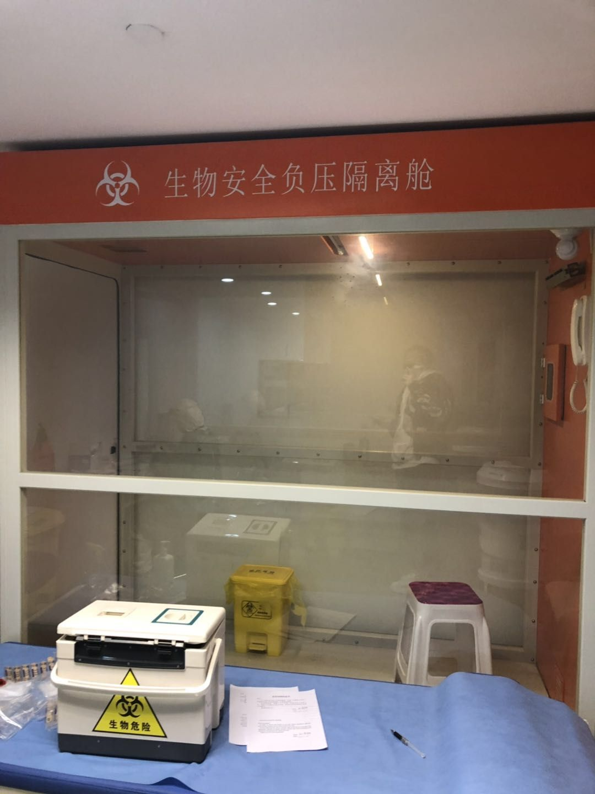
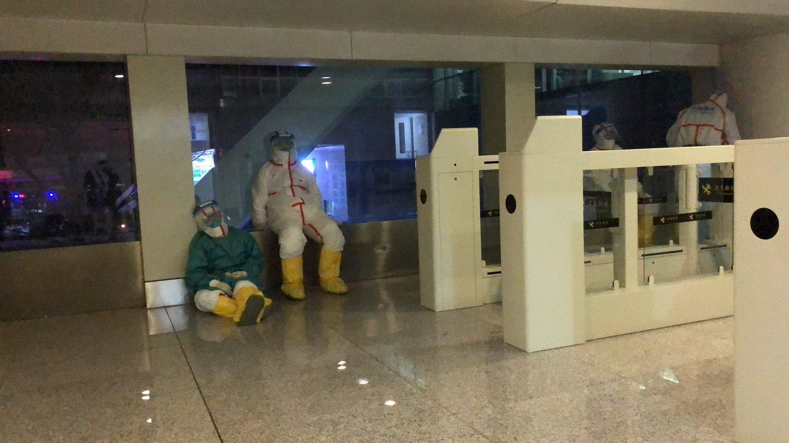

从英国抢票回国有多难？
原文链接 备份链接 欧洲疫情不断扩散，英国确诊病例迅速增加，由于部分航班取消，在英留学生想马上回国并不容易 文丨《财经》记者 陈亮 王静仪 编辑丨施智梁 英国疫情蔓延近日明显加速。截至3月15日，英国新冠肺炎确诊病例数已达1372例，与前 …
第一财经 2020-03-21 16:10:31 听新闻
[* 
陈姗姗
](/author/157.html)
孙女士是哈尔滨人，回来之前曾想过很多种被隔离的可能，或者在哈尔滨，或者在北京，万万没想到最终是在呼和浩特被隔离了。
今天（21日）早上七点14分，CA926航班从呼和浩特白塔机场起飞，经过不到一时的飞行降落在北京首都机场，这架空客330飞机上，只载运了19名旅客。
CA926原本是要从日本东京成田机场直飞北京首都机场，计划落地时间是20日的18点40分，但由于19日晚五部委联合出台的《关于目的地为北京的国际客运航班有关事宜的公告》，将部分北京到港国际航班调整到周边地区做为第一入境点，CA926便成了第一个“吃螃蟹的航班”，第一入境点变为内蒙古呼和浩特白塔机场。
在落地呼和浩特之前，国航app上显示的预估到京时间是21日零点30分，意味着要比平时的到港时间晚6个小时左右。但实际上，航班是在21日早上7点多才从呼和浩特再度起飞的，意味着落地呼和浩特后，旅客们在呼和浩特机场“滞留”超过12小时。

第一财经记者从呼和浩特机场独家了解到的信息是，在落地呼和浩特后的12小时里，CA926航班上的旅客完成了流行病学检查，边防入境手续等事先设计好的多个流程，最终有超过八成的86名旅客被送到呼和浩特当地酒店隔离观察14天，只有19名旅客继续登上CA926航班返回北京。
在落地呼和浩特后的12小时里，飞机上的旅客到底经历了什么？一位机上旅客孙女士向记者回忆了她的经历。
在机场分批核酸检测
孙女士乘坐的CA926航班是在昨天晚上7点落地的，虽然是空客330双通道飞机，但飞机上坐的并不满，后面几排可以算是隔离区，有两个发热的旅客和一个自称“花粉过敏“的旅客被安排坐在隔离区。
飞机落地后，广播通知边检的人要上来量体温，半小时后他们就上来了，测量完体温后，后面隔离区坐的旅客就跟工作人员一起下飞机了，之后航班上一个持有外交护照的法国人也带着他的两个孩子下飞机了，而其他旅客则在飞机上坐到晚上11点多才被允许下飞机。
下飞机后首先是被机场的工作人员询问从哪里回来的，怎么转机的，最终目的地要去哪里，然后就是分批次进行流行病学调查，15个人一批，核酸检测，抽血，量体温，测血压。

检测时间不到十分钟，没有收费。检测时又被问了一遍从哪里回来的，怎么转机的，最终目的地要去哪里等问题。
检测完后并没有给核酸结果，一批人里有八个被通知去办理边防入境手续，这个期间又被海关人员询问了一遍从哪里回来，最终目的地去哪里，甚至护照的每一页都被仔细查看了一遍。
凌晨两点半终于走出了海关，不过还没拿到行李，继续在机场等。等待期间留意了下机场里的工作人员很多，都穿着防护服，他们不少人应该互相都不认识，交流时会互相问“你是哪个单位，你是哪个部门的”。
一位呼和浩特机场工作人员今日在微博上留言：“旅客在呼和浩特等待的12小时，背后是两天两夜的方案修改，预案完善，是我们从昨天早上八点半到今天早上凌晨六点的坚守，是海关，边检，公安各个同志们15个小时的守护。”

落地后12小时到隔离酒店
凌晨五点，孙女士拿到了自己的行李，工作人员则通知叫到名字的可以登机回北京了，剩下的人则上了四辆大巴车。
这个时候，孙女士其实并不知道自己为什么要上大巴车。凌晨七点，大巴车开到了呼和浩特新城区的兴泰国航酒店，在拿到一份 “入境返呼人员集中隔离医学观察通知书”后，她才知道要在这个酒店被隔离观察14天了。

孙女士是哈尔滨人，回来之前曾想过很多种被隔离的可能，或者在哈尔滨，或者在北京，万万没想到最终是在呼和浩特被隔离了。
进入房间，门上贴着温馨提示，介绍了隔离期间的注意事项。隔离的费用是每天350元，其中住宿200元，餐费150元。

工作人员还建了一个隔离期间观察群，群里有102人，包括当地的公安，医生等工作人员。
8点多，吃到了来到酒店的第一顿早餐，12点多送来了午餐，工作人员说不能叫外卖，缺什么通知酒店统一采购。

据记者了解，CA926航班，只是首批被分流的国际航班中的第一条，此外还有3月20日莫斯科至北京CA910航班和3月22日巴黎至北京CA934航班，第一入境点调整为天津； 3月21至22日多伦多至北京HU7976航班第一入境点为太原（以上日期为北京时间）。
此内容为第一财经原创，著作权归第一财经所有。未经第一财经书面授权，不得以任何方式加以使用，包括转载、摘编、复制或建立镜像。第一财经保留追究侵权者法律责任的权利。 如需获得授权请联系第一财经版权部：021-22002972或021-22002335；banquan@yicai.com。
原文链接 备份链接 欧洲疫情不断扩散，英国确诊病例迅速增加，由于部分航班取消，在英留学生想马上回国并不容易 文丨《财经》记者 陈亮 王静仪 编辑丨施智梁 英国疫情蔓延近日明显加速。截至3月15日，英国新冠肺炎确诊病例数已达1372例，与前 …
原文链接 备份链接 乘客接受流行病学调查、通过边检、提取行李之后，重点旅客再按照各个区的分流安排接受隔离，最终形成防控的闭环。 记者 | 王 煜 摄影 | 沈 琳（除署名外） 一架来自境外的航班降落在上海后，来自重点国家的旅客要经历严密 …
原文链接 备份链接 这次疫情，也让我对祖国有了更深刻的认同，突发事件面前，我们国家的组织调配能力是一流的。 记者 | 沈 林 受访人 | 胡晓琳 最近很多在海外的同胞们都在纠结一个问题：非常时期，到底应不应该回国？或许我的经验可以给他们 …
原文链接 备份链接 2020年1月29日上午9点41分，“杭州发布”通报，1月28日杭州新增确诊人数19名，其中有2名，正是来自1月24日新加坡酷航的TR188航班。 该航班1月24日从新加坡樟宜机场飞往杭州萧山机场，当航班抵达的第二天， …
原文链接 备份链接 摘要：1月26日晚间，杭州官方发布“新型冠状病毒肺炎”最新通报，25日9时至24时，杭州市新增新型冠状病毒感染的肺炎确诊病例15例，其中2名确诊患者正是乘坐TR188次航班抵达杭州萧山机场的乘客。 文 | 殷盛琳 程静 …